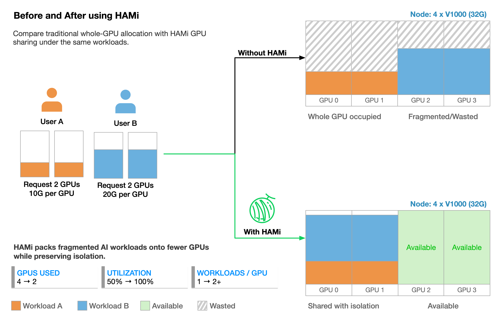
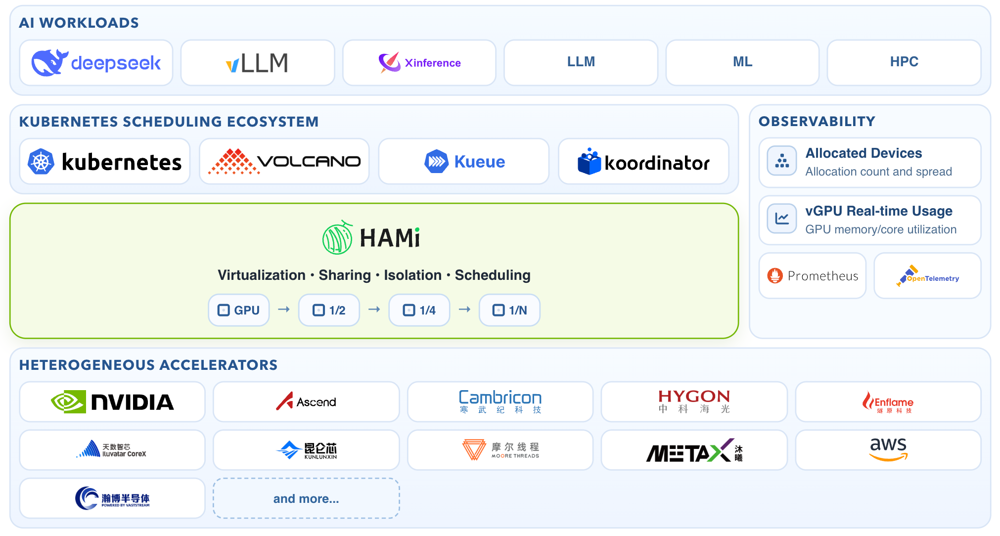

HAMi：Kubernetes 异构 AI 算力虚拟化与调度
HAMi（Heterogeneous AI Computing Virtualization Middleware）是 CNCF 孵化项目，给 Kubernetes 加一层「GPU/NPU 切分 + 设备感知调度」：一张卡按显存 MiB 和算力百分比分给多个 Pod，应用不改代码、驱动不改，继续用标准
resources.limits。
项目档案
| 项 | 值 |
|---|---|
| 仓库 | https://github.com/Project-HAMi/HAMi |
| 前身 | k8s-vGPU-scheduler（2021 年） |
| 许可证 / 语言 | Apache-2.0 / Go（约 12.5 万行）+ C/CUDA（HAMi-core） |
| CNCF 阶段 | Sandbox（2024-08）→ Incubating（2026-07） |
| 最新 release | v2.10.0（2026-08-21）；master 已领先 tag 280 个提交 |
| 社区 | 约 5,000 stars / 875 forks（2026-10），2026 年 786 次提交 |
| 文档 | https://project-hami.io/docs/（中英日，版本化） |
| 支持的加速器 | NVIDIA、AMD、昇腾、寒武纪、海光、天数、昆仑芯、沐曦、摩尔线程、燧原、壁仞、AWS Neuron、VastAI、远程 GPU（Lupine） |
为什么需要它
把整张 GPU 分配给 Pod 会带来三个结构性问题：
- 碎片化：小模型/推理任务占满一整张卡，显存利用率长期低于 20%。
- 调度盲区：默认调度器只看到
nvidia.com/gpu: 1这个整数，不知道显存、算力、GPU 间拓扑，无法做设备级放置。 - 异构难统一：不同厂商的 device plugin 和资源名各不相同，平台团队要维护多套工作负载配置。
HAMi 的回答是：在 device plugin 层把设备「虚拟化」成可切分资源，在调度器扩展点做设备感知放置，在容器内用运行时 hook 落实显存/算力上限。

整体架构

上图来自 HAMi 官方仓库（Apache-2.0）。
flowchart LR
subgraph CP[控制面]
W[Mutating Webhook] --> S[Scheduler Extender]
S --> KS[kube-scheduler<br/>同 Pod 内的 sidecar]
S --> NODE[Node 注解<br/>设备注册信息]
end
subgraph DP[数据面]
DPg[Device Plugin] -->|Allocate: env + mounts| C[业务容器]
MON[vGPU Monitor] -->|Prometheus 指标| P[Prometheus]
C -->|libvgpu.so 劫持 CUDA| GPU[(物理 GPU)]
end
S -->|vgpu-devices-allocated| DPg
| 组件 | 位置 | 职责 |
|---|---|---|
| Scheduler Extender | cmd/scheduler、pkg/scheduler | /filter 选节点 + 设备、/bind 加锁分配；同时提供 webhook 与 /refit（NUMA refit） |
| kube-scheduler sidecar | chart scheduler.kubeScheduler | 标准调度器，配置为 HAMi extender 的调用方；默认开启，也可换成外部调度器 |
| Device Plugin | cmd/device-plugin/nvidia | 注册 vGPU 资源、写节点设备注解、Allocate() 注入 libvgpu.so 与 limits 环境变量 |
| vGPU Monitor | cmd/vGPUmonitor | 容器级显存/利用率采集，暴露 Prometheus 指标并做反馈 |
| Mutating Webhook | pkg/scheduler/webhook.go | 校验 Pod，改 schedulerName，拦截伪造分配注解、privileged + GPU 等危险组合 |
关键端口：extender 127.0.0.1:9444（仅同 Pod 的 kube-scheduler 调用）、HTTP/webhook 0.0.0.0:9443、scheduler metrics :9395、monitor metrics :9394。
一个值得注意的设计是：HAMi 的 /filter 不是纯过滤。它在 Filter 内部完成设备可用性判断（Fit）和节点/设备打分，直接挑出唯一最优节点并返回，相当于把选点决策提前到 Filter，而不是走 extender 的 prioritize 协议。这样做的代价是必须自己实现完整打分，好处是能把「设备级」信息纳入决策——标准调度器只认识整数卡数。
一次 GPU Pod 的完整链路
sequenceDiagram
participant U as 用户
participant API as kube-apiserver
participant WH as HAMi Webhook
participant KS as kube-scheduler
participant EXT as HAMi Extender
participant DP as Device Plugin
participant K as kubelet
participant C as 容器
U->>API: 创建 Pod（limits: nvidia.com/gpu/gpumem/...）
API->>WH: AdmissionReview
WH-->>API: 改写 schedulerName + 校验注解
API->>KS: 进入调度队列
KS->>EXT: /filter（候选节点列表）
EXT->>EXT: Fit 设备 + 打分 + 预占 + 写 vgpu-devices-to-allocate
EXT-->>KS: 只返回 1 个节点名
KS->>EXT: /bind
EXT->>EXT: 抢节点锁（hami.io/mutex.lock）
EXT->>API: Patch 注解 + Binding
API->>K: Pod 绑定到节点
K->>DP: Allocate()
DP-->>K: 环境变量 + libvgpu.so/ld.so.preload 挂载
K->>C: 启动容器
C->>C: 进程启动时加载 libvgpu，CUDA 调用被接管
分配结果写在 Pod 注解里（hami.io/vgpu-devices-allocated），device plugin 的 Allocate() 读注解、拼出 CUDA_DEVICE_MEMORY_LIMIT_<i>、CUDA_DEVICE_SM_LIMIT 等环境变量，并把 libvgpu.so 与 /etc/ld.so.preload 挂进容器。容器里 CUDA 进程一启动就被劫持，具体机制见 HAMi-core：容器内 CUDA 劫持与资源隔离。
资源模型
以 NVIDIA 为例：
resources:
limits:
nvidia.com/gpu: 1 # 申请 1 张物理卡
nvidia.com/gpumem: 3000 # 显存 3000 MiB
nvidia.com/gpucores: 30 # 算力 30%
# 或者 nvidia.com/gpumem-percentage: 25（与 gpumem 二选一）
| 资源/注解 | 含义 |
|---|---|
nvidia.com/gpu | 物理 GPU 张数；节点上注册的值是「每卡 deviceSplitCount（默认 10）个虚拟槽位」 |
nvidia.com/gpumem | 显存上限（MiB） |
nvidia.com/gpumem-percentage | 显存上限（物理卡百分比），与 gpumem 互斥 |
nvidia.com/gpucores | 算力上限（0–100） |
nvidia.com/use-gputype / nouse-gputype | 指定/排除 GPU 型号 |
nvidia.com/use-gpuuuid / nouse-gpuuuid | 指定/排除 GPU UUID |
nvidia.com/numa-bind | 要求 GPU 落在同一 NUMA 节点 |
其它厂商的资源名由 chart devices.<vendor> 配置（如 metax-tech.com/sgpu、huawei.com/Ascend910），语义各不相同：有的只支持整卡或固定切分（如壁仞 SVI 2/4 分区），有的支持显存+算力双配额。
调度策略
| 层级 | 策略 | 含义 |
|---|---|---|
| 节点 | binpack（默认） | 优先填满已用节点，减少碎片 |
| 节点 | spread | 优先空闲节点，降低争用 |
| 设备 | binpack / spread | 节点内挑卡方向 |
| 设备 | topology-aware | 按 GPU 间拓扑（NVLink/PCIe/NUMA）挑选组合 |
| 设备 | mutex | 只选完全空闲的 GPU（独占语义） |
| 设备 | numa | 以 NUMA 节点作为排序键，可与 binpack/spread 组合 |
- 集群默认值在 chart 的
scheduler.defaultSchedulerPolicy（默认节点 binpack、设备 spread）。 - Pod 用
hami.io/node-scheduler-policy、hami.io/gpu-scheduler-policy覆盖。 - v2.10 起 GPU 策略支持逗号分隔的策略链，如
mutex,binpack,numa：过滤型策略先筛，排序型策略按书写顺序逐级比较。 - 并发安全靠节点级分布式锁（
hami.io/mutex.lock注解 + 重试）；同一 PodGroup 的成员抢锁失败会重试（--node-lock-retry-timeout，默认 28s），避免 gang 调度被锁竞争打断。 - 设备打分权重可用
hami.io/device-scoring-weights按 Pod 调整。
设备抽象与异构后端
所有厂商实现同一个接口（pkg/device/devices.go）：
type Devices interface {
CommonWord() string
MutateAdmission(ctr *corev1.Container, pod *corev1.Pod) (bool, error)
GenerateResourceRequests(ctr *corev1.Container) (ContainerDeviceRequest, error)
Fit(devices []*DeviceUsage, request ContainerDeviceRequest, pod *corev1.Pod,
nodeInfo *NodeInfo, allocated *PodDevices) (bool, map[string]ContainerDevices, string)
ScoreNode(node *corev1.Node, podDevices PodSingleDevice,
previous []*DeviceUsage, policy string) float32
AddResourceUsage(pod *corev1.Pod, n *DeviceUsage, ctr *ContainerDevice) error
PatchAnnotations(pod *corev1.Pod, annoinput *map[string]string, pd PodDevices) map[string]string
GetNodeDevices(n corev1.Node) ([]*DeviceInfo, error)
// ...
}
调度器启动时由 pkg/scheduler/config 把各后端注册进全局 device.DevicesMap。NVIDIA 节点有四种运行模式：
| 模式 | 隔离方式 | 特点 |
|---|---|---|
hami-core（默认） | 容器内 libvgpu.so 劫持 CUDA | 任意 NVIDIA 卡，MiB/1% 粒度，软隔离 |
mig | NVIDIA MIG 实例 | 硬件隔离；v2.10 起支持 Flexible MIG，按需建删、免 drain |
mps | CUDA MPS | 并发执行，按进程隔离算力 |
remote | Lupine 远程 GPU | 本节点只作 GPU 服务端，跨节点分配 |
部署与运维
前置条件（NVIDIA 路径）：驱动 ≥ 440、NVIDIA Container Toolkit、containerd/Docker/CRI-O 默认 runtime、Kubernetes ≥ 1.23、glibc ≥ 2.17、kernel ≥ 3.10。
kubectl label nodes <node> gpu=on
helm repo add hami-charts https://project-hami.github.io/HAMi/
helm install hami hami-charts/hami -n kube-system
kubectl apply -f examples/nvidia/default_use.yaml
运维要点：
- chart 结构：scheduler Deployment（含 kube-scheduler sidecar）、device plugin DaemonSet（含 monitor 容器）、webhook 证书 patch Job、RBAC、ServiceMonitor（可选）；厂商配置集中在
devices.<vendor>。 - 高可用：
scheduler.leaderElect=true+replicas>1，自动创建 PDB。 - 与 GPU Operator 共存：必须设
devicePlugin.enabled=false，否则nvidia.com/gpu重复注册；节点上只能有一个 GPU 管理插件。 - OpenShift / SELinux：
platform.openshift=true、selinux.enabled=true处理 relabel。 - 可观测性：scheduler 指标在
:9395，monitor 在:9394，均带 Prometheus 格式；官方有 Grafana dashboard 与 HAMi-WebUI。 - 升级注意：DRA 已拆到独立的 HAMi-DRA chart；AMD 走独立的
amd-device-plugin。
生态集成
| 项目 | 集成方式 |
|---|---|
| vLLM | 以显存上限运行推理，多个模型共享同一张卡（见 vLLM Production Stack 实战） |
| Volcano | gang 调度 + 队列/多级优先级；Volcano 也有自己的 vGPU device plugin，二者择一 |
| Kueue | 作业级准入与配额；通过 ResourceTransformation 把 HAMi 资源暴露给 Kueue（见 Kueue） |
| Prometheus / Grafana | 容器级显存与算力指标、调度器分配指标 |
| NVIDIA GPU Operator | 驱动/Toolkit 由 Operator 管，调度与切分由 HAMi 管 |
| HAMi-DRA | 基于 Kubernetes DRA 的过渡实现，独立 chart 发布 |
| KAI Scheduler | 由 KAI 决策、HAMi-core 执行隔离（KAI Resource Isolator） |
与同类方案对比
| 方案 | 隔离强度 | 切分粒度 | 硬件要求 | 调度感知 | 多厂商 |
|---|---|---|---|---|---|
| HAMi（hami-core） | 软（API 拦截 + 配额） | MiB / 1% | 任意 NVIDIA（驱动 ≥440） | 设备级 | ✅ 12+ |
| NVIDIA MIG | 硬（硬件分区） | 固定 profile | Ampere+（A100/H100 等） | MIG 拓扑 | ❌ |
| NVIDIA MPS | 软（SM 分区，显存共享） | 算力配额 | Volta+ | 部分 | ❌ |
| time-slicing | 无显存隔离 | 时间片 | 任意 | 无 | ❌ |
| GPU Operator | 不涉及切分 | — | — | 无 | ❌ |
| 阿里 cGPU | 软 | 显存/算力 | 阿里云栈 | 部分 | ❌ |
选择建议：要硬隔离/SLA 合规选 MIG；要通用卡上的弹性共享与统一异构调度选 HAMi。两者也能在同一集群按节点混用（operatingmode 按节点配置）。
已知限制与风险
- 软隔离：隔离建立在「进程通过 CUDA 库调用驱动」这一假设上，绕过库的路径（DinD、直接 ioctl、静态链接、musl）都会失效；多租户噪声只能 best-effort，不能替代 MIG。
- 平台限制：仅 Linux（glibc ≥ 2.17）；同一节点只能有一个 GPU 管理插件；容器内已有
/etc/ld.so.preload时可能冲突。 - 版本耦合：依赖 CUDA 符号版本（
_v2/_v3）与驱动行为，CUDA 大版本升级需要回归；MIG/MPS 模式与 hami-core 行为差异大。 - 账本误差：显存限制按申请量记账，context、碎片、对齐需要补偿参数（
CONTEXT_SIZE、memoryFactor），实际占用可能略超配额。 - 算力限制依赖宿主 PID：反查失败时降级为只限显存（日志会出现
SET_TASK_PID FAILED）。
源码导读
| 路径 | 内容 |
|---|---|
cmd/scheduler/main.go | extender 入口、端口与 flag、leader election |
pkg/scheduler/scheduler.go | Filter/Bind、节点锁、PodManager、配额与指标 |
pkg/scheduler/webhook.go | admission 校验与改写 |
pkg/scheduler/policy/ | 节点/设备打分与策略链 |
pkg/device/devices.go | Devices 接口、设备模型、序列化 |
pkg/device/nvidia/ | NVIDIA 后端（含 MIG、NUMA、拓扑） |
cmd/device-plugin/nvidia/ | device plugin 注册与 Allocate |
cmd/vGPUmonitor/ | 指标采集与 limits 反馈 |
charts/hami/ | Helm chart（values 里能看到全部可配项） |
libvgpu/（子模块） | HAMi-core：CUDA hook 实现 |
参考
- HAMi 仓库 · HAMi-core
- 官方文档 · v2.10.0 发布说明
- CNCF 晋升公告
- 相关：kube-scheduler 的 Scheduler Extender、Kueue、HAMi-core